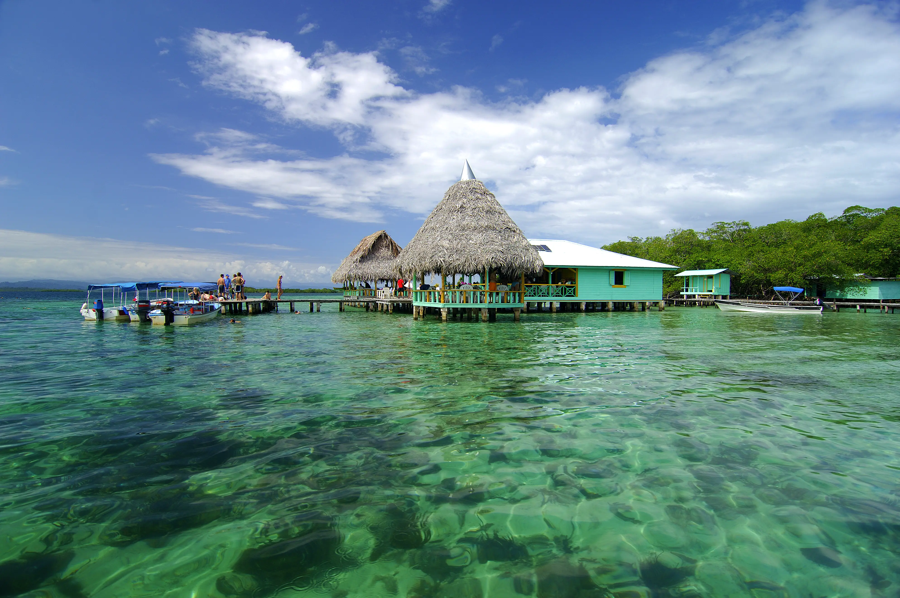

Panamá es un país ubicado en el extremo sureste de América Central. Su nombre oficial es República de Panamá y su capital es la ciudad de Panamá. Limita al Norte con el mar Caribe, al Sur con el océano Pacífico, al Este con Colombia y al Oeste con Costa Rica.
No es de extrañar que este archipiélago caribeño sea el primer lugar de vacaciones de Panamá. Tópicos aparte, aquí hay mucha playa de postal, un mar esmeralda y ondulantes paleras. Pero eso no es todo: se puede pedalear hasta la playa, tararear al ritmo de un improvisado calipso en isla Bastimentos y hacer sobremesa tras la cena en una cabaña al borde del mar. Los alojamientos van de albergues baratos para mochileros a impresionantes cabañas en la selva, pasando por centros vacacionales de lujo en las islas exteriores. Los surfistas se lanzan a las olas, pero también se puede bucear y observar la variada fauna marina, o hacer voluntariado. La isla más urbanizada del archipiélago y la que alberga la capital provincial es Isla Colón.
